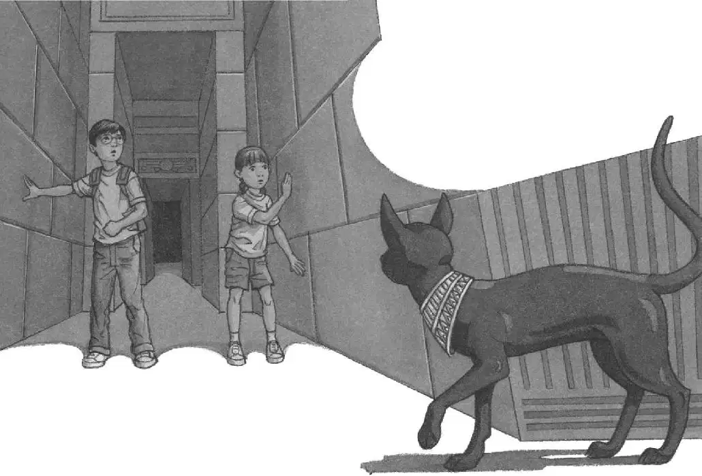
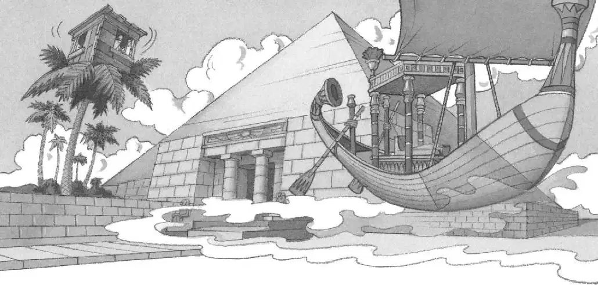

It was pitch-dark.
“What happened?” asked Annie.
“I don’t know. Something weird,” said Jack. “We have to get out of here fast. Push against the door.”
“Good idea,” said Annie in a small voice.
They felt their way through the darkness to the top of the stairs.
“Don’t worry. Everything’s going to be okay,” said Jack. He was trying to stay calm.
“Of course,” said Annie.
They leaned against the wooden door and pushed.
It wouldn’t budge.
They pushed harder.
It was no use.
Jack took a deep breath. It was getting harder to breathe and harder to stay calm.
“What can we do?” asked Annie.
“Just…just rest a minute,” said Jack, panting. His heart was pounding as he tried to see through the darkness.
“Maybe we should start down the hall,” Annie said. “Maybe we’ll eventually come to…to an exit.”
Jack wasn’t sure about that, but they had no choice.
“Okay, come on,” he said. “Feel the wall.”
Jack felt the stone wall as he climbed slowly down the stairs. Annie followed.
Jack started down the dark hallway. It was impossible to see anything. But he kept going, taking one step at a time, moving his hands along the wall.
Jack went around a corner. He went around another corner. He came to some stairs. He climbed up. Annie followed.
There was a door. Jack pushed against it. Annie pushed, too. This door wouldn’t budge, either. Or was it the same door?
Jack and Annie stopped pushing. It was no use. They were trapped.
Annie took Jack’s hand in the dark. She squeezed it.
They stood together at the top of the stairs, listening to the silence.
“Meow.”
“Oh, man,” Jack whispered.
“He’s back!” said Annie.
“Meow.”

“Follow him!” cried Jack. “He’s going away from us.”
Jack and Annie started down the dark hallway, following the cat’s meow. Hands against the wall, they stumbled through the darkness.
“Meow.”
Jack and Annie kept following the sound, all the way through the winding hallway.
They went around one corner, then another, and another….
Finally they saw a light at the end of the tunnel. They rushed forward—out into the bright sunlight.
“Yay!” Annie shouted.
But Jack was thinking. “Annie,” he said. “How did we get out of the false passage?”
“The cat,” said Annie.
“But how could the cat do it?” asked Jack.
“Magic,” said Annie.
Jack frowned. “But—”
“Look!” said Annie. She pointed.
The cat was bounding away, over the sand.
“Thank you!” called Annie.
“Thanks!” Jack shouted at the cat.
The cat’s black tail waved. Then the cat disappeared in the shimmering waves of heat.
Jack looked toward the palm trees. The magic tree house sat like a bird’s nest at the top of one.
“Time to go home,” Jack said.
Jack and Annie set off for the palm trees. It was a long, hot walk.
At last Annie grabbed the rope ladder. Jack followed.
Once they were inside the tree house, Jack reached for the book about Pennsylvania.
Suddenly he heard a rumbling sound. It was the same sound he had heard in the pyramid.
“Look!” Annie said, pointing out the window.
Jack looked.
A boat was beside the pyramid. It was gliding over the sand like a boat sailing over the sea.
Then the boat faded away into the distance.
Was it just a mirage? Or was the ghost-queen finally on her way to the Next Life?

“Home, Jack,” whispered Annie.
Jack opened the Pennsylvania book.
He pointed to the picture of Frog Creek.
“I wish we could go home,” he said.
The wind began to blow.
The tree house started to spin.
It spun faster and faster.
Then everything was still.
Absolutely still.